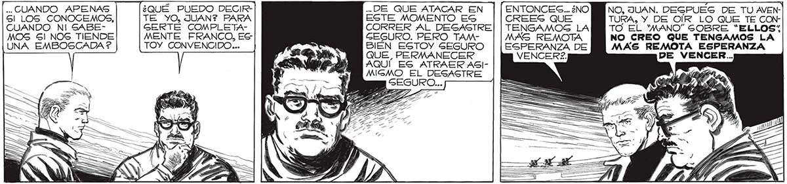

... QUE LO HEMOS DESCONCERTADO, POR LO TANTO, AHORA MIGMO VAMOG A APROVECHAR LA VENTAJA PARCIAL QUE HEMOS CONGEGUIDO: DEJAREMOS EL REFUGIO DEL ESTADIO Y MARCHAREMOS A TODA VELOCIDAD HACIA EL CENTRO | DE LA CIUDAD. ... CUANDO APENAS Sl LOS CONOCEMOS, CUANDO NI SABEMOS 5! NOS TIENDE UNA EMBOSCADA ? TRA PERO NO DIGAS A NADIE LO QUE PIENGO. SERA MAS FACIL SUCUMBIR Gl LO HACEMOG PELEANDO.MAG FAClL, Y MAS PROPIO DE NUEG EGPECIE. EN LA GUERRA,COMO EN EL BOX, CUANDO EL ADVER GARIO VACILA HAY QUE PEGARLE CON q TODO... ¡ ATAQUEMOS, | ERES Y QUIZA HAGAMOS | PERDER PIE AL ENEMIGO! ¿QUÉ PUEDO DECIRTE YO, JUAN? PARA GERTE COMPLETAMENTE FRANCO, ES TOY CONVENCIDO ... ..DE QUE ATACAR EN ESTE MOMENTO ES CORRER AL DESASTRE GEGURO. PERO TAMBIÉN ESTOY SEGURO QUE, PERMANECER AQUÍ ES ATRAER ASI¡EN DIEZ MINUTOS DEBEMOS ESTAR FUERA DEL ESTADIO! EL CAPITAN ASINTIO. MIRÉ A FAVALLI, PERO NO ALZO LOS OJOS DEL SUELO. NO ENCGONTRANDO OPOSICION, , EL MAYOR EMPEZO A DAR LAS ORDENES PARA EL ATAQUE. VA? ¿NO EG UNA LOCURA, LANZARNOS ASÍ CONTRA EL ENEMIGO ... TURA, Y DE OÍR LO QUE TE CONTO EL MANO” SOBRE “ELLOS; NO CREO QUE TENGAMOS LA MAS REMOTA ESPERANZA DE VENCER... MAS REMOTA ESPERANZA DE MIGMO EL DESASTRE WUEDÉ ANONADADO. NINGUNA OPINION HE RESPETADO JAMAG TANTO COMO LA DE MI AMIGO FAVALLI. Sl ÉL DECIA QUE NO HABÍA CHANCE, POR ALGO SERÍA... PERO, OBEDECIENDO QUIZA A LOG DICTADOS “DE LA ESPECIE” COMO EL MISMO... ... DECIA, ALGO SE ME REBELO DENTRO. ACEPTAR TANTO PESGIMISMO FAVA: ¡ TIENE QUE HABER ALGUNA FORMA DE VENCERLOS! PIENGA COMO QUIERAS, JUAN. QUIZA TENGAG RAZON... QUIZA YO EXAGERO.. Mie DI CUENTA DE QUE LO DECIA PARA NO DEGALENTARME DEL TODO, PARA QUE TAMBIÉN YO... ¿QUÉ PIENSAS, FAr | NO, JUAN. DESPUES DE TU AVEN179
